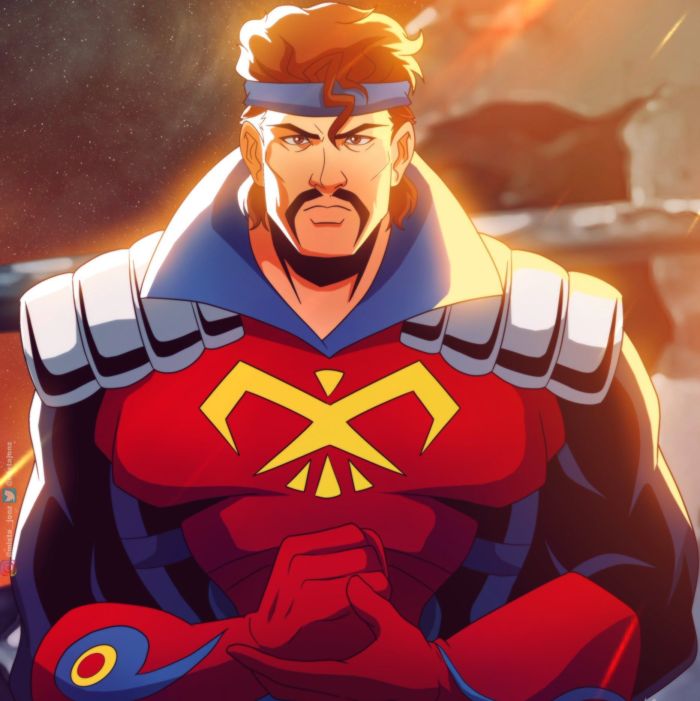
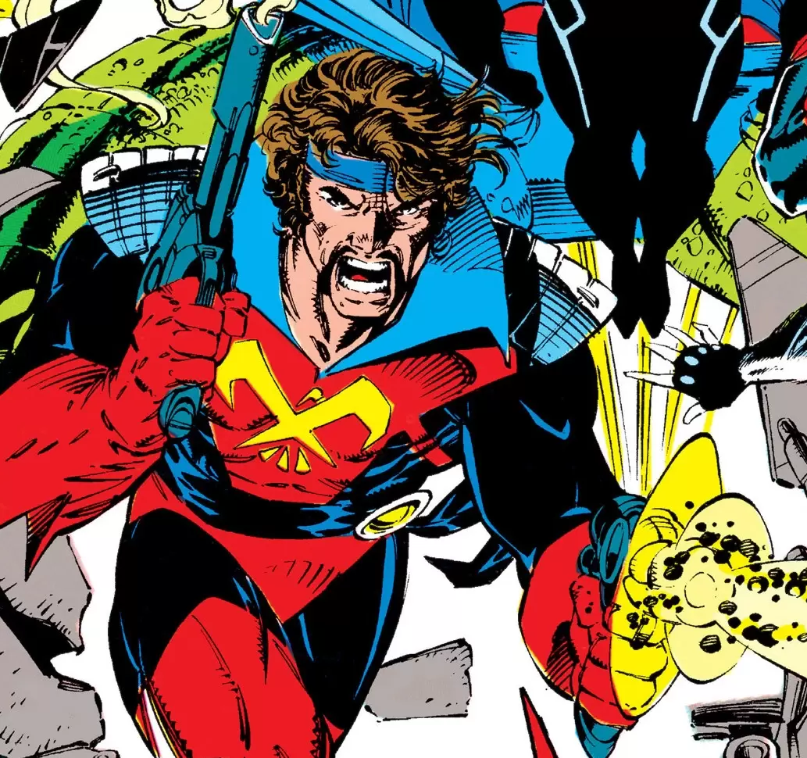

Corsair
Alter ego: Christopher Summers
Species: Human
Place of Origin: Anchorage, Alaska, USA
Team Affiliations: Starjammers, Shi'ar empire, United States Air Force
Partnerships: Cyclops (son), Havok (son), Vulcan (son), Cable (grandson), Gwen Warren (genetic granddaughter), Rachel Summers (granddaughter)

Notable Aliases: Corsair, Major Christopher Summers, Skybolt
Abilities: Highly skilled pilot, swordsman, and marksman